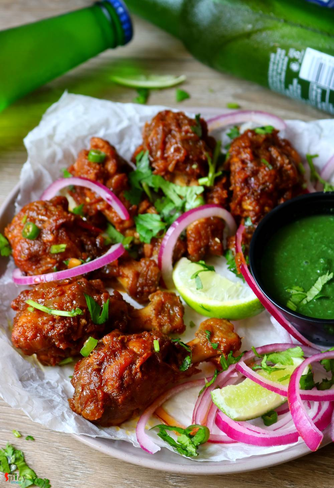

Simple and Easy Recipes
Bhuna Chicken Wings / Slow cooked Indian Chicken Wings
© 2016 Spicy World, Published on: Apr 5, 2019
Who doesn't give order Chicken wings from starter menu in restaurants?? I am one crazy wings lover. There are so many yummy recipes of Chicken wings in the internet. They all look really good. Here is my take on Bhuna (slow cooked, using water as less as possible) Chicken wings which is basically Indian style spicy wings. You can make this recipe with drumsticks also. With some green chutney and onion slices they taste yummmmm!

Ingredients
- 10-12 chicken wings (with drumettes)
- 1 large onion, thinly sliced.
- 2-3 Tablespoons of ginger garlic paste.
- 1 medium tomato, finely chopped.
- Salt and sugar as per your taste.
- Spice powder 1 Teaspoon each of (turmeric powder, chili powder, kashmiri chili powder, roasted coriander powder).
- 1-2 Tablespoons of meat masala or garam masala powder.
- 2 Tablespoons of mustard oil.
- 3 Tablespoons of any cooking oil.
- Little water if needed.


Steps
Marinate the chicken wings with ginger garlic paste, some salt, all of the spice powder, meat masala or garam masala powder and mustard oil.
Mix everything very well and keep them aside for 3 hours or overnight in fridge.
In a pan or wok, heat any cooking oil.
Fry onion slices until they become golden in color.
Then add the marinated chicken, mix well and cook on medium - low flame for 10-15 minutes.
Next add chopped tomatoes, mix well and cook for 10 minutes on medium flame.
Chicken and tomato will release lot of juices, you have to cook them in their own juices.
Add salt and little sugar as per your taste, mix well and cook on low flame until the chicken becomes soft.
If your gravy becomes very dry, then add a splash of water.
Lastly add chopped green chilies and coriander leaves. Mix well and turn off the heat.
Let it rest for few minutes then serve.
Your Bhuna Chicken Wings are ready to serve.
Serve this hot with green chutney.
")